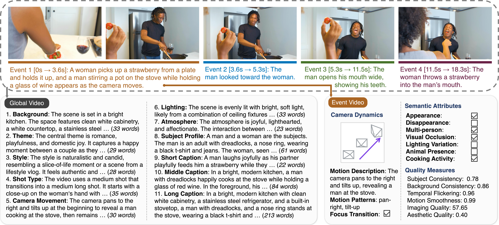
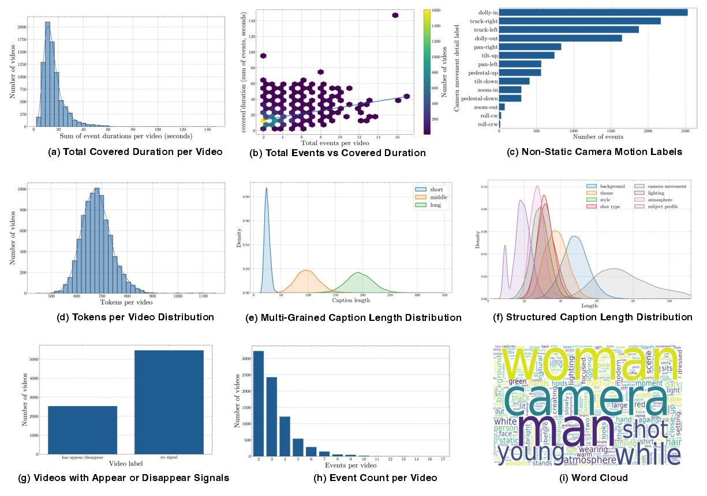
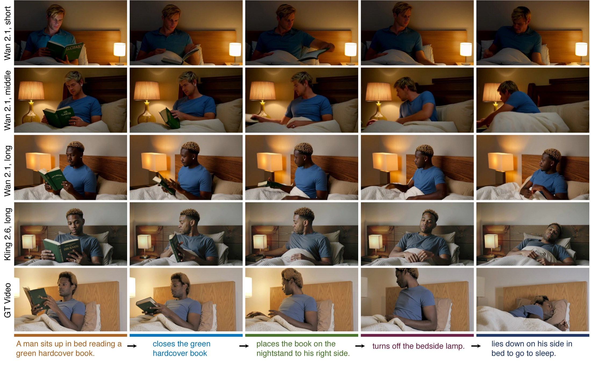
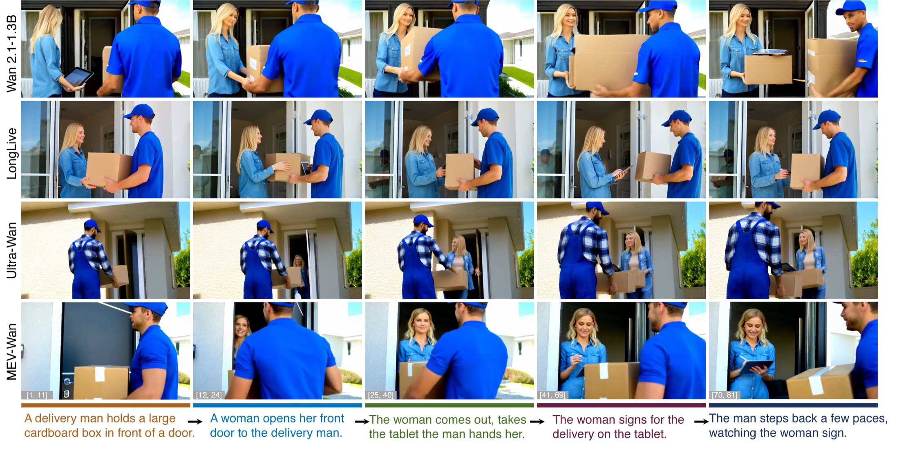

NeurIPS 2026
MEV: A Multi-Event Video Dataset for Long-Take Generation
1 Mohamed bin Zayed University of AI
2 Carnegie Mellon University
Long-take videos with precise event boundaries and hierarchical captions, camera-aware descriptions, and generation-oriented quality scores.
TL;DR
Existing video-text datasets often provide short clips or coarse captions, which weakens supervision for long-take temporal structure. MEV instead decomposes real-world videos into reproducible atomic events with explicit boundaries, hierarchical captions, camera-aware event descriptions, and quality profiling. This makes temporally localized conditioning easier to study and improves multi-event long-video adaptation in downstream generation experiments.
Dataset Overview
Designed around temporal structure rather than clip-level slogans
MEV pairs long-take source videos with event boundaries, hierarchical captions, camera motion, semantic tags, and quality scores.

Showcase
Data Showcase
Long-take examples pair playback with event captions, camera motion, semantic attributes, and quality scores.
Annotation Taxonomy
A schema built for controllable generation and structured analysis
Each record combines video-level scene context with event timestamps, captions, camera labels, semantic attributes, and VBench quality scores.
| Level | Contents | Research Use |
|---|---|---|
| Global fields | Background, theme, style, shot type, camera movement, lighting, atmosphere, subject profile | Whole-video semantics and controllable prompting |
| Global summaries | Short, middle, and long captions | Prompt granularity control and retrieval evaluation |
| Event descriptors | Start and end timestamps, event caption, camera label, camera motion description | Temporally localized conditioning and event reasoning |
| Semantic attributes | Appearance, disappearance, multi-person, lighting change, animal, cooking, sports, travel, child, environmental change | Subset curation and challenge-focused analysis |
| Quality profile | Global- and event-level VBench scores: temporal flickering, subject consistency, background consistency, aesthetic quality, imaging quality, motion smoothness | Quality-aware filtering and benchmark diagnostics |
Schema Sketch
A representative record layout
{
"global_prompt": {
"background": "...",
"theme": "...",
"style": "...",
"shot_type": "...",
"camera_movement": "...",
"lighting": "...",
"atmosphere": "...",
"subject_profile": "...",
"short_caption": "...",
"middle_caption": "...",
"long_caption": "..."
},
"events": [
{
"start_time": 0.0,
"end_time": 4.2,
"caption": "...",
"camera_motion_label": "pan-right",
"camera_motion_desc": "...",
"focus_shift": null,
"has_appearance": false,
"has_cooking": false,
"has_sports": false,
"has_travel": true,
"has_child": false
}
],
"vbench_scores": {
"subject_consistency": 0.0,
"background_consistency": 0.0,
"motion_smoothness": 0.0
}
}Statistics and Analysis
Multiple views of temporal, linguistic, and camera structure
Duration, event-count, caption-length, camera-motion, and semantic-attribute distributions expose both structure and diversity in MEV.

Observed Patterns
What the statistics emphasize
- Covered durations cluster around tens of seconds while keeping a long tail.
- Total covered duration and event count are related but remain diverse.
- Non-static camera motion is profiled explicitly rather than hidden in captions.
- Short, middle, and long captions show clear length separation.
- Appearance and disappearance attributes expose event-local transition-heavy subsets.
- Word distributions confirm that captions are action-centered rather than purely scenic.
Experiments
MEV is evaluated as both data and supervision
MEV-Wan is measured with event-centric MEV-Eval scores and generic VBench quality metrics against Wan2.1-1.3B, LongLive, and Ultra-Wan.
MEV-Eval
Event-centric generation scores
EEA, EOA, TGA, and BTC evaluate execution, ordering, temporal grounding, and transition coherence.
| Method | EEA | EOA | TGA | BTC |
|---|---|---|---|---|
| Wan2.1-1.3B | 0.42 | 0.20 | 0.33 | 0.41 |
| LongLive | 0.47 | 0.39 | 0.48 | 0.58 |
| Ultra-Wan | 0.46 | 0.33 | 0.42 | 0.50 |
| MEV-Wan | 0.61 | 0.45 | 0.60 | 0.64 |
VBench
Generic video quality scores
Average over five random 128-prompt draws from the MEV test set.
| Method | Subj. | Back. | Flick. | Smooth. | Aesth. | Image |
|---|---|---|---|---|---|---|
| Wan2.1-1.3B | 0.954 | 0.949 | 0.989 | 0.991 | 0.585 | 61.674 |
| LongLive | 0.949 | 0.950 | 0.986 | 0.990 | 0.504 | 61.953 |
| Ultra-Wan | 0.936 | 0.956 | 0.990 | 0.987 | 0.557 | 63.328 |
| MEV-Wan | 0.960 | 0.952 | 0.990 | 0.991 | 0.590 | 64.924 |


Citation
@misc{zhu2026mevmultieventvideodataset,
title = {MEV: A Multi-Event Video Dataset for Long-Take Generation},
author = {Peiyuan Zhu and Shaoan Xie and Yifan Shen and Wen Tian and
Zijian Li and Guangyi Chen and Kun Zhang},
year = {2026},
eprint = {2610.38241},
archivePrefix = {arXiv},
primaryClass = {cs.CV},
url = {https://arxiv.org/abs/2610.38241}
}